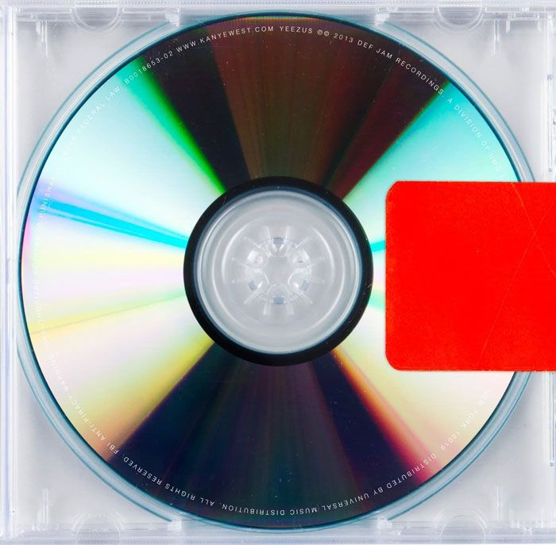

.jpg)
Escutar música talvez seja o que mais fiz ano passado, eu amo a sensação de ouvir uma canção que amo, ou descobrir
alguma nova, posso dizer que é uma das
melhores sensações que existe, encontrar uma música nova do meu gosto pessoal
me causa êxtase um sentimento maravilhoso, me sinto bem fazendo isso, amo
a paz que me traz, felicidade e até tristeza,
todos sentimentos provenientes de uma música eu aceito sem receio algum, sentimentos ruins fazem parte de qualquer
ação que
executamos, emum dado momento pode vir qualquer memória a tona e trazer um amargo sabor, no meu caso a música me ajudou a
lidar melhor com
essas emoções, trazer um resignificado a elas e não torna-lás tão negativas. Eu me considero uma pessoa chata
no meu gosto pessoal, em todos aspectos, isso se
aplica em música também, sou alguém meio chato de agradar, mas não acho que
exista música boa ou ruim, cada ouvinte vai interpretar de uma forma e muda-lo
a seu gosto, existem músicas que eu gosto
e as quais não gosto, isso vale para todas pessoas. Isto pode parecer contraditório da minha parte por dizer que sou
difícil
de agradar, mas, eu gosto de diversos generos de músicas diferentes mas em cada um desses generos eu tenho minhas preferências
específicas, como o tipo
de instrumento que é usado, a forma como ela progride, o jeito de ser cantada e o beat.
Eu tenho alguns albuns que no momento são os meus mais escutados, sendo assim, resolvi mostrar alguns separados por gênero/localidade:Rap, R&B, Nacionais.
Esses albuns em especificos tem diversas outra sonoridades dentro de si mesmos, como: Hip-Hop Industrial, Expermiental, Cloud Rap, Jazz, 90S, Blues e MPB
pode se dizer que há uma grande diversidade musical mesmo que cada album tenha um gênero em sí, eles mergulham dentro de subgêneros diversas outras vertentes,
isso é uma das coisas quem mais aprecio em uma canção, a sua diversidade, quando um artista consegue criar ou reproduzir uma estética própria, estética essa
que possui identidade, uma das coisas mais preciosas que há quando se trata de arte, é algo que gosto de ver em artistas no qual escuto.
A estetica pode ser vista e evidenciada atraves de clipes, como toda a sua composição também, por esse motivo separei em fotos e videoclipes que mostram essa estética